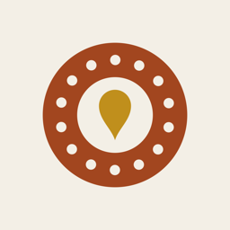
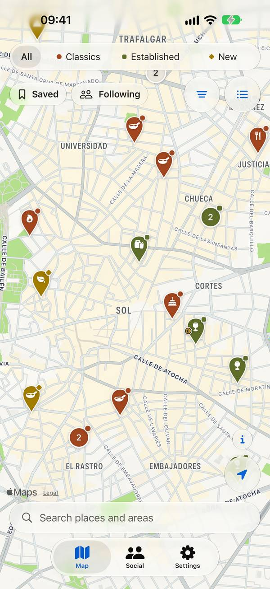
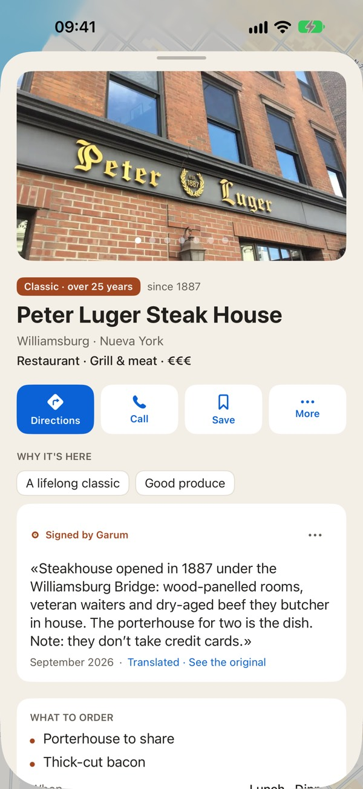
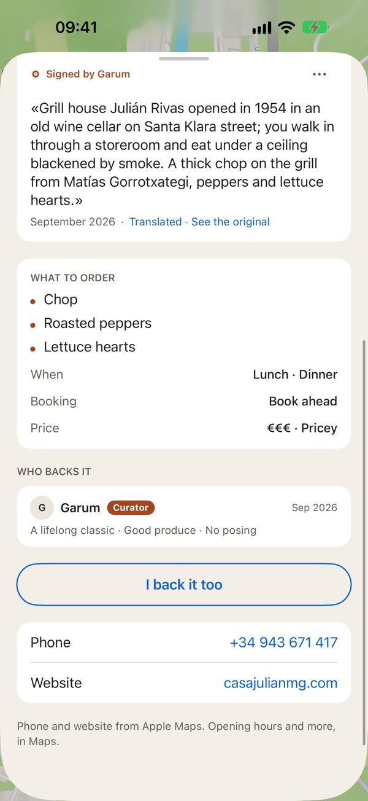
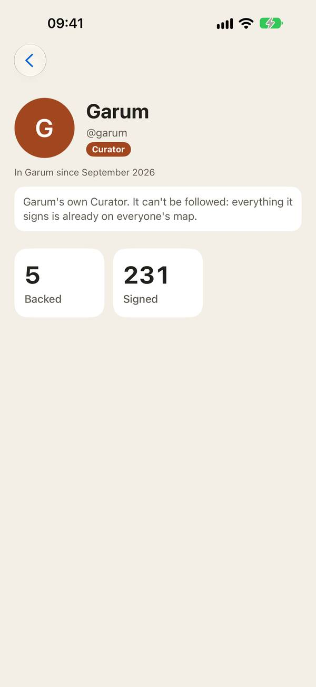

Seize Apps · iOS
Garum
Garum est une carte où les adresses entrent au mérite, pas grâce aux étoiles ni à la publicité. Trois listes selon l’ancienneté — les classiques, ouverts depuis plus de 25 ans, les établis, entre 3 et 25 ans, et les nouveaux, de moins de 3 ans, qui ont un parti pris — et les adresses passent d’une liste à la suivante toutes seules, avec les années. Chacune porte les raisons de sa présence et des notes signées par qui s’en porte garant. Tout le monde peut proposer une adresse ; elle entre quand un Curator la signe ou que suffisamment de personnes de confiance la recommandent.




Ce qu’elle fait
Une seule chose, bien faite.
Chaque adresse, avec son pourquoi
Une liste fermée de motifs — un classique, le produit, le prix, le lieu — et des notes signées, jamais de notation. Horaires, téléphone et itinéraire arrivent en direct depuis Plans.
Ce qui te fait envie, maintenant
Filtre par liste, type d’adresse, cuisine, prix et moment, ou selon ce qui convient en ce moment même. Quoi commander et s’il faut réserver : c’est sur la fiche.
Tout est signé
Vois qui recommande chaque adresse et suis des gens qui ont tes goûts. Propose ce qui manque ; si ça n’entre pas, on te dit pourquoi. Les Curators peuvent aussi proposer de retirer une adresse qui a fermé ou qui n’est plus ce qu’elle était, et la modération décide, motif à l’appui.
Confidentialité
À toi, pas à nous.
Regarder la carte ne demande aucun compte. Pour voir pourquoi chaque adresse est là et pour contribuer, tu te connectes avec Apple, sans donner ton e-mail : tu apparais avec le nom que tu partages avec Apple (ou celui que tu choisis ensuite) et un nom d’utilisateur, et ce que tu apportes est publié, sur un serveur situé dans l’UE. Pas de publicité, pas de mesure d’audience. Garum a sa propre politique de confidentialité et ses propres conditions d’utilisation.
Une app de Seize Apps.